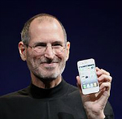

A Brief History of Apple Inc.
Everyone is interested in getting the latest Apple products. Apple has developed a loyal following of consumers that want the hottest new Apple gadgets as soon as they're released. The large following that Apple has accumulated and their overall success as a business has many people wondering how did Apple become the thriving business that it is today?
Apple got it's start in the year 1976 when two college drop outs named Steve Jobs and Steve Wozniak released the Apple I. A small store, called The Byte Shop, was the first location the Apple I was availible for purchase. A noteworthy aspect of the Apple I was that it was simple, but very well designed. The Apple I used far fewer parts than it's competition. With the profits from the Apple I, the two Steves were able to create the Apple II and Apple III.
Jobs and Worniak went public with their company on December 12, 1980 and quickly generated more capital than any Initial Public Offering since the creation of Ford Motor Company in 1956. Apple going public created 300 millionaires instantly, which is more than any company in history. Shortly after Apple went public they released their first Graphic User Interface computer called Apple Lisa in 1983. Unfortunatly, it's high price tag of $9,995 prevented it from becoming a huge hit in the business market. Later that year Apple came out with the Macintosh computer, which had a commercial that was broadcasted during the third quarter of Superbowl XVII.
In 1985 Steve Jobs sold all of his Apple shares, except one, and left Apple because of power conflicts. While seperated from Apple, Steve Jobs founded NeXT Inc. which in 1996 was purchased by Apple and was later developed into the popular Mac OS X. This made Steve Jobs apart of Apple's management again. In 1997 Apple launched the Apple Store and Steve Jobs became the CEO for the company until he resigned in August 2011 in response to heatlh complications. Between 1998 and 2001 Apple released the iMac, iBook, Mac OS X, retail stores throughout the United States, and the popular iPod, which transformed how people listened to music. The latest Apple releases are the iPhone 6, iPhone 6 plus, and the Apple Watch. Apple continues to launch new and innovative technology that improves on previous models, keeping consumers amazed and excited about future Apple products. When it comes to Apple the possibilities are endless.
From left to right: Apple's first logo, Apple's first official logo, and Apple's current logo
The History of Apple
Important Dates in Apple's History
| 1971 | Jobs and Worniak meet for the first time |
| 1976 | Apple I is released |
| 1977 | Apple II is released |
| 1980 | Apple III is released |
| Apple launches IPO of it's stock to the public | |
| 1983 | Apple Lisa is released |
| The Macintosh 128K is announced via a brochure | |
| 1984 | Macintosh 128K commercial airs |
| 1985 | Steve Jobs leaves Apple |
| 1991 | Apple forms the Aim Alliance |
| 1994 | Apple launches a PDA called Newton |
| 1996 | Steve Jobs returns to Apple |
| 1997 | Steve Jobs becomes Apple's CEO |
| 2001 | Apple introduces Mac OS X |
| Apple launches retail stores | |
| Apple launches the first iPod | |
| 2002 | Apple releases a redesigned iMac |
| 2003 | Apple launched the iTunes store |
| 2004 | Apple released a color version of the iPod |
| 2005 | Apple released Mach OS X v10.4 "Tiger" |
| 2007 | Apple launched the first version of the iPhone |
| 2010 | Apple announced the iPad |
| 2011 | Steve Jobs resigned as CEO |
| 2014 | Apple announced the iPhone 6 |
| Apple announced the iPhone 6 Plus | |
| Apple announced the Apple Watch |
References
Wikipedia: History of Apple Inc.
Title:" The Brand Finance US 500 2014 "
Title:" Memorable Quotes from Steve Jobs "
Title:"Apple Unveils iPhone 6, iPhone 6 Plus, and Apple Watch "
Title:"30 Pivotal Moments in Apple's History"
Title:"Apple Computer, Inc"

Design is not just what it looks like and feels like. Design is how it works
~Steve Jobs
About the Author

Deanna Cook is a student at Florida State University studying Human Resource Management.
Images courtesy of Wikipedia and Apple
Color Palette